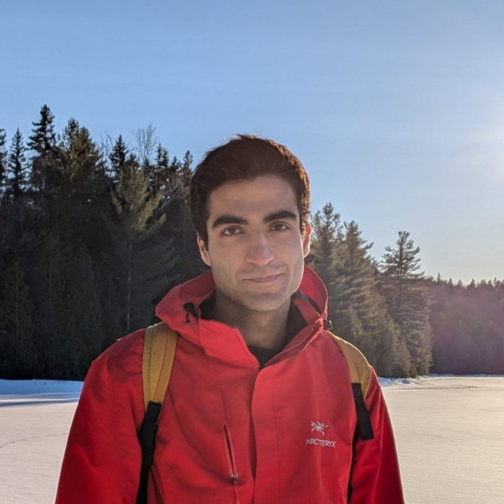

Graduate Teaching Assistant
University of Tehran, School of Electrical and Computer Engineering · 2021–2023
- Deep Generative Models Lead
- Machine Learning
- Advanced Deep Learning
- Data Analytics & Visualization Lead

PhD Candidate,
LIVIA,
ILLS ·
École de technologie supérieure
Montréal, Canada
I am interested in generative models and how to adapt them cheaply to customized use cases.
I am a PhD candidate at École de technologie supérieure in Montréal, working with Prof. Eric Granger and Prof. Mohammadhadi Shateri, and I am currently also a research intern at Electronic Arts, working on interactive world models for games.
I obtained my Master's in Artificial Intelligence at the University of Tehran and my Bachelor's in Computer Engineering at the Isfahan University of Technology.
Je m'intéresse aux modèles génératifs et à la manière de les adapter à faible coût à des cas d'usage personnalisés.
Je suis doctorant à l'École de technologie supérieure, à Montréal, où je travaille avec les professeurs Éric Granger et Mohammadhadi Shateri, et je suis actuellement aussi stagiaire de recherche chez Electronic Arts, où je travaille sur les modèles du monde interactifs appliqués aux jeux vidéo.
J'ai obtenu une maîtrise en intelligence artificielle à l'Université de Téhéran et un baccalauréat en génie informatique à l'Université de technologie d'Ispahan.


University of Tehran, School of Electrical and Computer Engineering · 2021–2023
Online · 2022
Full-time supervision of 16 students from different countries, leading two research group projects over three weeks.
University of Tehran · 2022
Taught 80 students across 14 data science workshops alongside seven other mentors. Materials